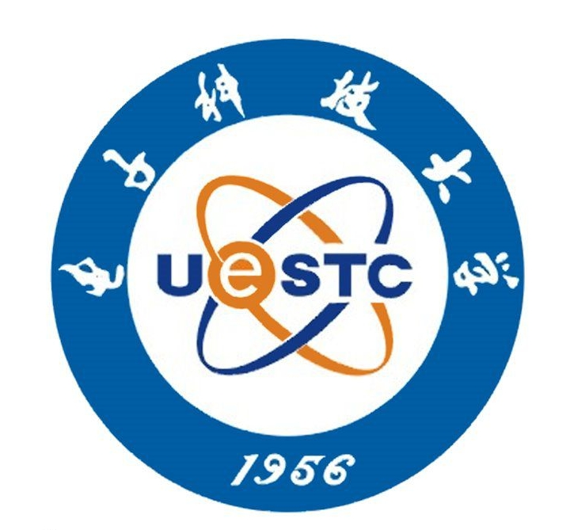
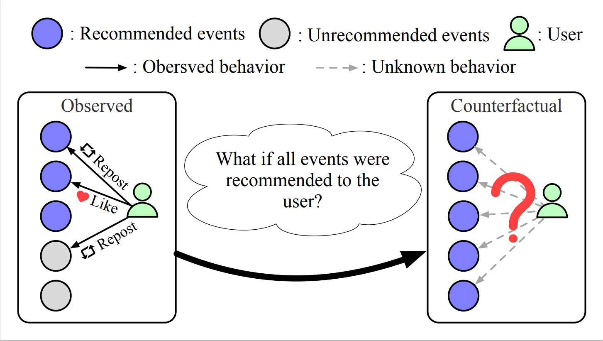
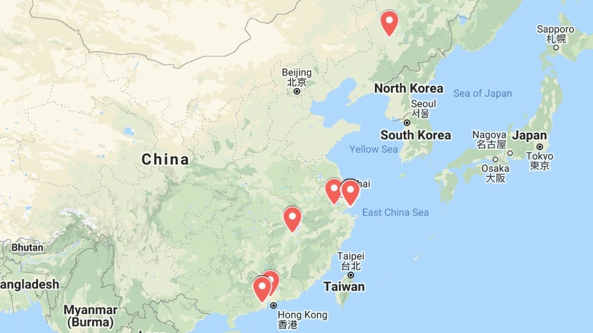

|
News
[2021/12] 1 paper is accepted by INFOCOM 2022.
|
|

|
University of Electronic Science and Technology of China (UESTC), China
Bachelor Degree in SISE • Sep. 2016 - Jun. 2020
|
|
|
University of Electronic Science and Technology of China (UESTC), China
Second-year Master , School of Computer Science and Engineering • Sep. 2020 - Present
Supervisor: Prof. Fan Zhou and Prof. Ting Zhong.
|
|

|
CausalRD: A causal view of Rumor Detection via Eliminating Popularity and Conformity Biases[Pdf]
Weifeng Zhang,
Ting Zhong,
Ce Li,
Kunpeng Zhang,
Fan Zhou
IEEE International Conference on Computer Communications, INFOCOM 2022.
Area: Social Network, Representation Learning, and Causal Inference.
We provide a new view of rumor detection through causality, which aims at eliminating popularity and conformity biases in social network.
|
|

|
Identifying IP Usage Scenarios: Problems, Data, and Benchmarks
Fan Zhou,
Weifeng Zhang,
Yong Wang,
Ting Zhong,
Goce Trajcevski,
Ashfaq Khokhar
IEEE Network Magazine.
Area: Network, Resource.
We presented and investigated a novel and practical problem called IP usage scenario prediction in the internet community.
|
Last updated on Jan. 14th, 2022
Template credit to Jon Barron
|
|